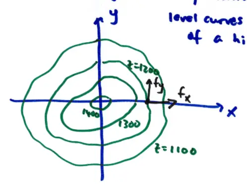

15.5 Directional Derivative and the Gradient
If \( z = f(x, y) \)
we know \( \frac{\partial f}{\partial x} = f_x \) is the rate of change of \( f \) with respect to \( x \) while \( y \) is constant
\( \frac{\partial f}{\partial y} = f_y \) same idea, but \( x \) is fixed and \( y \) varies.
There is a physical interpretation of \( f_x \) and \( f_y \)

Here, \( f_x \) tells us how fast the height changes if we walk in \( x \) direction (East)
\( f_y \) tells us how \( f \) changes if we go in \( y \) direction (North)
But what if we go in a direction such as North-East?